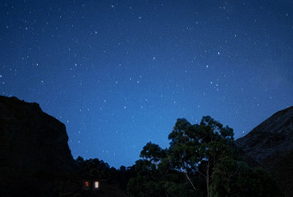
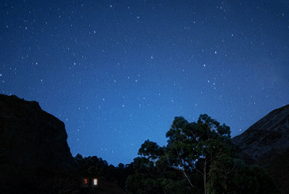

sustainability
지속가능경영
삼화제지는 대한민국의 대표 특수지 전문 제조회사로서 작게는 지역사회, 넓게는 글로벌 공동체와 공존하고
동반 성장할 수 있는 활동을 지속적으로 운영 및 실천하고 있습니다.
또한, 지역에서 도움의 손길이 필요한 취약계층을 지원하며 지역사회 발전을 위한 지속가능한경영 활동을 전개하고 있습니다.
환경경영활동 - 기후 위기 대응
삼화제지는 자연과 함께 경영전반에 걸쳐 환경 영향을 최소화하기 위한 환경경영시스템(ISO14001)을 도입하고
대한민국을 대표하는 녹색 기업으로서 성장하고자 아래와 같은 활동을 실천하고 있습니다.
사회 공헌 활동
삼화제지는 지역 사회와 함께 성장하기 위한 환경보호와 나눔 문화 확산을 위해 노력합니다.
 

-
환경 보호 개선
지역 지자체 및 NGO 단체와 협력하여 지역 하천 정화활동을 진행하고 있으며, 청주시와 MOU를 맺어 지역 대기오염 감축, 미세먼지 저감 활동을 실천하고 있습니다.
-
나눔 활동
자사 내 동아리 활동 및 가족 초청 모임 등을 통해 직원 및 지역 사회의 복지를 장려하고 있으며, 지역 독거노인에게 일정의 소액을 지원하여 헌법에서 보장한 사회적 기본권을 추구할 수 있도록 지원하고 있습니다.